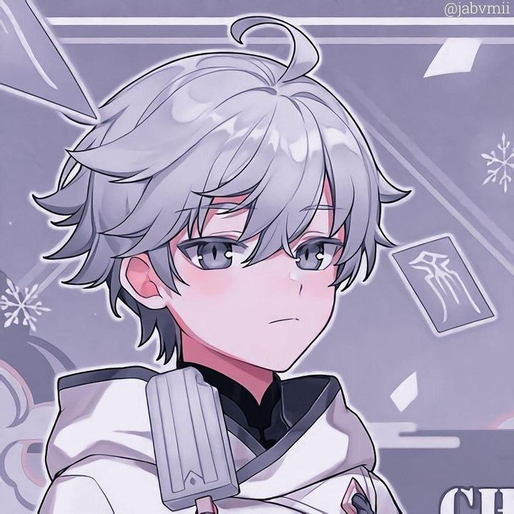

|
Situsku.com
|
|
| Home Galeri Profile |

Vatrilefor
Pembuat Web
Jurnalis berpengalaman dengan lebih dari 10 tahun di industri media.
Memulai karir sebagai reporter di media cetak lokal sebelum beralih ke media digital.
Passionate tentang menyampaikan berita yang akurat dan mudah dipahami oleh masyarakat luas.
Pendidikan: S1 Jurnalistik - Universitas Indonesia
Pengalaman Kerja:
• Founder Situsku.com (2018-Sekarang) • Senior Editor MediaOnline.co.id (2015-2018) • Reporter Harian Nasional (2012-2015)
"Berita yang baik mengedukasi tanpa menggurui,
menginformasikan tanpa menakut-nakuti."
|